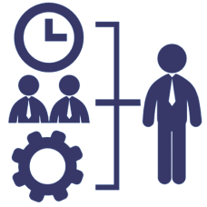

Welcome
“TRACKGENIX” is a revolutionary system designed for GigaTech Software Solutions SA. This system will allow them to efficiently manage their proyects, schedule flow, selected work teams and much more

Application Features
Hours Log

Reports

Resource Management
Multiple Roles
Why should you use Trackgenix?
Productivity Booster
Be more productive using better Focus, Time Management,Organization and Efficiency

Work traceability
Keep track of specs, changes, requests, results, and versions

Leadership and team management
Lead a group of people in accomplishing a task or common goal. Effective team management involves supporting, communicating with and uplifting team members so they perform to the best of their abilities and continue to grow as professionals.

Decision making
Make better decisions for your business

Inscription Form
Email me a copy
I am a human and I accept terms of service
Text
Company's Mission
Where we started ; Where we are headed
Make time your ally; make puntuality the difference.
Our mission is to allow workers all over the world to reach their full potential. Our goal is to bring more power to start-ups through top-notch and user-friendly time-tracking web apps, easily accessible through any device. We believe in integrity, honesty, passion for our client's ideas and communication.
Quote
“TrackGenix allows us to effortlessly and easily track total workflow in each of our projects and make a balanced distribution of team workload”
Satisfied costumer.
About us
RadiumRocket developed TrackGenix as a software solution for optimal time-tracking and project management as a request for one of its most trusted clients, GigaTech Software Solutions, in late 2021, and swiftly became one of the most requested services in all of the million-dollar South American productivity industry. RadiumRocket are a group of passionate people fond of the latest cutting edge technologies in software development. They position ourselves at your side through all the process of development being responsible and co-workers with you to successfully get your product moving.

Our Products

Employee time control from any place and device
A single app for recording the day for any situation:
- Web
- Mobile app
- Kiosk with tablet
- Biometric recognition devices

Customized working day registration policies
Customize the mandatory registration of the working day with a completely flexible app to clock in at work. Apply more restrictive measures:
- Expected transfer in one click
- Weekly massive transfer
- Flexible entry and exit

The most intuitive time control app
Registration of the day from anywhere to promote teleworking and self-management of time.
- 24 hour access from anywhere.
- Geolocated transfer detection system
- Instant notifications and alerts

Project management done well
Advanced controls and features to effortlessly control all your projects.
- Brose between different projects.
- Equipped with graphs and tablets
Company

GigaTech Software Solutions SA building.
Trackgenix is a HR software company that streamlines human resource management for clients in more than 1200 cities around the world.
An inclusive workplace for everyone

Get to know our team and our offices and join us in our leap towards better human resources management. Learn how companies from all sectors already manage talent in a more efficient and humane way with our human resources software.
Our workplace, our world

Trackgenix was created remotely in 2008 by Yves Hiernaux and Mic Cvilic after many years of working with hard to manage and even harder to understand reports and timesheets. Although we have grown, we continue with the same goal of offering a flexible, reliable and easy-to-use time control tool.
Support

Phone call or Video conference support from 8am to 4pm everyday

24h support by online chat bot
Tutorials
- “TrackGenix: Quick Start Guide” 5:10
- “How to set up TrackGenix for your company: In-depth guide” 31:02
- “Project Management using TrackGenix” 22:15
- “Unlocking Max Productivity: Advanced Tips and Tricks for Workers” 12:40
- “Report Reviews Guide” 09:10
- “Google Calendar & other web services integration” 11:25